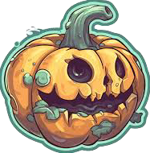

Halloween
O Halloween, celebrado no dia 31 de outubro, é uma festividade que combina tradição, mistério e diversão. Suas origens remontam aos antigos celtas, que celebravam o Samhain, uma festividade que marcava o fim da colheita e o início do inverno. Acreditava-se que, nessa noite, os espíritos dos mortos retornavam à Terra, e para proteger-se deles, as pessoas acendiam fogueiras e usavam fantasias.
Com o passar dos séculos, a celebração se transformou, especialmente nos Estados Unidos, onde ganhou popularidade no início do século XX. Hoje, o Halloween é sinônimo de fantasias criativas, doces e travessuras. Crianças e adultos se vestem de personagens assustadores ou engraçados, vão de porta em porta pedindo "doces ou travessuras" e participam de festas temáticas.
Além das fantasias, o Halloween também é marcado por decorações sombrias, como abóboras esculpidas (as famosas "jack-o'-lanterns"), teias de aranha e esqueletos. Filmes de terror e histórias de fantasmas se tornam populares, criando uma atmosfera de suspense e diversão.
Embora o Halloween tenha raízes antigas, ele continua a evoluir, incorporando novas tradições e costumes. É um momento de celebração da imaginação e da criatividade, permitindo que todos, independentemente da idade, se entreguem a um mundo de mistério e diversão.
